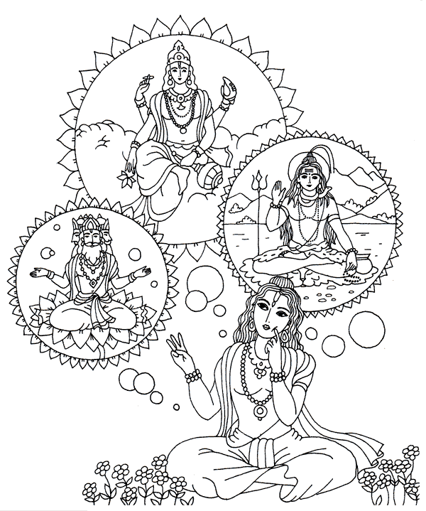

Hace mucho tiempo atras, en la India, hubo una asamblea de sabios a orillas del río Sarasvati. En esta reunión se hizo la siguiente pregunta: De las tres Deidades que controlan el Universo (Brahma - el creador, Visnu – el mantenedor, y Siva – el destructor de los mundos) cual de ellas es afectada por las 3 energías materiales de la bondad, pasión e ignorancia, las que afectan toda la materia del Universo?